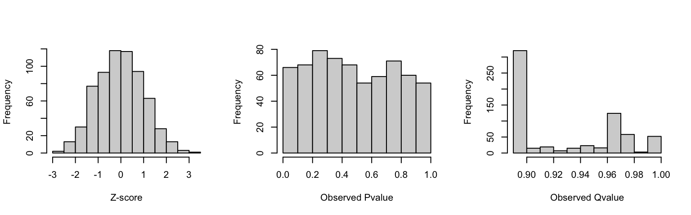

Analyzing single-cell RNA-seq perturbation with DECAL
André M. Ribeiro-dos-Santos
07/26/2021
quick-start.RmdAbstract
Single-cell RNA sequencing technology has allow us to explore cell specific expression patterns. Functional genomics have been exploring such dataset to establish direct link between genetic alterations and differential gene expression. The package DECAL (Differential Expression analysis of Clonal Alterations Local effects) provides tools to explore single-cell of perturbed cells populations. It uses a negative binomial generalized linear model to evaluate gene expression changes between clonal cell populations and gene candidates. The present vignette explains the package usage, demonstrantes a typical analysis workflow, and explains the package statistical model. decal package version: 0.1.0
Default Workflow
DECAL (Differential Expression analysis of Clonal Alterations Local effects) provide you with tools to conduct differential expression analysis of single-cell perturbations experiments to potentially interacting genes. Similar to other differential expression analysis tools, it models gene expression using a Negative Binomial (or Gamma-Poisson) regression, modeling each gene UMI count by the cell alteration status and cell total count.
Features
-
decalis compatible with tidyverse analysis. - Includes a suit of simulation functions to generate your own dataset based
decalmodel and evaluate your statistical power. - Package has few dependencies, requiring only
MASS,fastglmandMatrix. - Can evaluate specific clonal alteration and gene effect, instead of modeling all genes and all alterations. This allow us to quickly investigate a large number of interactions skipping unlikely effects.
Installation
To install decal package current version, open your R terminal and type:
## Install remotes if not available with
## install.install.packages("remotes")
remotes::install_github("mauranolab/decal")
Using decal
The package main function (decal) runs the whole statistical analysis by
fitting a Negative Binomial (or Gamma-Poisson) regression to each gene
and alteration pair specified and evaluate the perturbation statistical
significance for a single-cell perturbation experiment. You can run decal
as follow:
decal(perturbations, count, clone)The three parameters required are the following:
- a table specifying the population and gene to evaluate perturbation
(
perturbations). - a UMI count matrix that each column correspond to a cell and each row
a gene or feature (
count). - a list of cells specifying your clones composition (
clone). This is represented by a R list composed by character (or integer) vectors named after the clone ID and indicating the cells belonging to this clone.
decal returns a deep copy of the perturbations table with the following
additional columns:
-
n0andn1: number of non-perturbed and perturbed cells, respectively. -
x0andx1: average UMI count among perturbed and non-perturbed cells, respectively. -
mu: average UMI count among all cells. -
xb: expected average UMI count of perturbed cells. -
theta: estimated negative binomial dispersion parameter. -
z: estimated perturbation z-score. -
lfc: log2 fold-change of perturbed cells gene expression. -
pvalueandp_adjusted: perturbation t-test significance values.
Quick Start
Below we include a example of decal analysis on a simulated dataset included
with our package.
library(decal)
data("sim_decal")
perturbations <- sim_decal$perturbations
count <- sim_decal$count
clone <- sim_decal$clone
res <- decal(perturbations, count, clone)
head(res)| clone | gene | expected_lfc | n0 | n1 | x0 | x1 | mu | theta | xb | z | lfc | pvalue | p_adjusted |
|---|---|---|---|---|---|---|---|---|---|---|---|---|---|
| clone-001 | gene1353 | 0 | 979 | 21 | 57.3 | 60.0 | 57.4 | 78 | 60.0 | 1.16 | 0.06 | 0.25 | 0.38 |
| clone-001 | gene1212 | 0 | 979 | 21 | 37.3 | 38.0 | 37.3 | 73 | 38.5 | 0.63 | 0.04 | 0.53 | 0.69 |
| clone-001 | gene1032 | 0 | 979 | 21 | 21.6 | 21.9 | 21.6 | 76 | 22.2 | 0.46 | 0.04 | 0.64 | 0.78 |
| clone-001 | gene504 | 0 | 979 | 21 | 4.3 | 4.2 | 4.3 | 46 | 4.3 | -0.04 | -0.01 | 0.96 | 0.98 |
| clone-001 | gene1065 | 0 | 979 | 21 | 23.9 | 22.8 | 23.9 | 75 | 22.7 | -0.96 | -0.07 | 0.34 | 0.49 |
| clone-001 | gene995 | 0 | 979 | 21 | 19.4 | 19.7 | 19.4 | 77 | 19.7 | 0.27 | 0.02 | 0.79 | 0.87 |
Exploring decal results
Now let’s explore decal results. Admitting a 5% false discovery rate
(FDR), we can select significantly differentiate perturbations by
picking those with p_adjusted < 0.05.
Below we present the top 5 interactions with highest reducing and increasing
log fold-change effect (as measured by lfc).
sig <- subset(res, p_adjusted < 0.05)
sig <- sig[order(sig$lfc), ]
## select first 5 and last 5 since`sig` is ordered by lfc
pick <- c(1:5, nrow(sig) - 1:5)
sig[pick,]| clone | gene | expected_lfc | n0 | n1 | x0 | x1 | mu | theta | xb | z | lfc | pvalue | p_adjusted | |
|---|---|---|---|---|---|---|---|---|---|---|---|---|---|---|
| 352 | clone-008 | gene130 | -3 | 972 | 28 | 1.4 | 0.04 | 1.4 | 18 | 0.03 | -3.8 | -5.4 | 0.00 | 0.00 |
| 83 | clone-002 | gene094 | -2 | 986 | 14 | 1.2 | 0.07 | 1.2 | 17 | 0.08 | -2.7 | -3.9 | 0.01 | 0.01 |
| 572 | clone-013 | gene265 | -3 | 970 | 30 | 2.0 | 0.13 | 1.9 | 22 | 0.13 | -5.8 | -3.9 | 0.00 | 0.00 |
| 483 | clone-011 | gene993 | -3 | 995 | 5 | 19.8 | 1.20 | 19.7 | 77 | 1.41 | -6.3 | -3.8 | 0.00 | 0.00 |
| 88 | clone-002 | gene790 | -3 | 986 | 14 | 10.1 | 0.71 | 10.0 | 68 | 0.82 | -8.7 | -3.6 | 0.00 | 0.00 |
| 471 | clone-011 | gene1207 | 3 | 995 | 5 | 37.4 | 264.40 | 38.5 | 73 | 314.13 | 20.0 | 3.1 | 0.00 | 0.00 |
| 648 | clone-015 | gene1069 | 3 | 979 | 21 | 24.0 | 194.24 | 27.6 | 73 | 199.43 | 57.6 | 3.1 | 0.00 | 0.00 |
| 120 | clone-003 | gene699 | 3 | 981 | 19 | 7.5 | 69.47 | 8.7 | 67 | 62.67 | 40.3 | 3.1 | 0.00 | 0.00 |
| 604 | clone-014 | gene636 | 3 | 992 | 8 | 6.4 | 52.62 | 6.8 | 61 | 52.83 | 23.9 | 3.0 | 0.00 | 0.00 |
| 76 | clone-002 | gene150 | 3 | 986 | 14 | 1.5 | 10.50 | 1.6 | 19 | 12.07 | 19.7 | 3.0 | 0.00 | 0.00 |
To visualize the perturbation effect, let’s plot the top 3 interactions increasing and reducing gene expression.
## compute a normalize size-factor
sf <- mean(colSums(count)) / colSums(count)
## add log10(x+1) transformation function
log10p <- function(x) log10(x + 1)
## pick tables first 3 and last 3
pick <- c(1:3, nrow(sig) - 1:3)
par(mfrow = c(2, 3))
for (i in pick) {
## Determinate perturbed and unperturbed cells
x <- colnames(count) %in% clone[[sig$clone[i]]]
## Calculate normalized expression count
y <- count[sig$gene[i],] * sf
## plot jitter
title <- paste0(sig$clone[i], "+", sig$gene[i],"\nLFC: ", round(sig$lfc[i], 2))
plot(
x + runif(length(x), -.3, .3), log10p(y), main = title,
axes = FALSE, xlab = "", ylab = "Normalize UMI count",
xlim = c(-.5, 1.5), ylim = c(0.9, 1.1) * range(log10p(y))
)
axis(1, at = 0:1, labels = c("perturbed", "unperturbed"), las = 2)
axis(2, at = log10p(c(0, 2, 5, 10, 20, 50, 100)), labels = c(0, 2, 5, 10, 20, 50, 100))
## add 95% error bar
ymed <- c(sig$mu[i], sig$xb[i])
ylow <- qnbinom(0.025, size = sig$theta[i], mu = ymed)
yupr <- qnbinom(0.975, size = sig$theta[i], mu = ymed)
points(c(0, 1), log10p(ymed), col = "firebrick", cex = 2, pch = 16)
arrows(
x0 = c(0, 1), y0 = log10p(ylow), x1 = c(0, 1), y1 = log10p(yupr),
code = 3, angle = 90, col = "firebrick", length = .1, lwd = 2
)
}
Evaluating decal results
In our sim_decal simulated dataset, we introduced some real expression
perturbations as indicated by expected_lfc column in perturbations table,
such as a 0 expected_lfc indicate no change was applied.
We can evaluate our results using the confusion matrix below:
conf_mat <- table(real = res$expected_lfc != 0, decal = res$p_adjusted < 0.05)
round(prop.table(conf_mat), 3)
#> decal
#> real FALSE TRUE
#> FALSE 0.447 0.009
#> TRUE 0.026 0.518Based on this confusion matrix, our decal model presented:
- Accuracy: 0.96
- Precision: 0.95
- Recall: 0.98
- F1 Score: 0.97
- Observed FDR: 0.04
These results show great metrics with recall, accuracy, precision and F1 score above 95% and a false discovery ratio within our admitted 5%.
Next, let’s explore how well decal estimated the real log2 fold-change (LFC)
applied. Illustrated below is the decal estimated LFC (lfc column in res)
distribution for each of the real perturbations values applied (expected_lfc
column).
lfc_histogram <- function(lfc, fn = function(x) { x$count / sum(x$count) }) {
hist_breaks <- c(-Inf, seq(-4, 4, length.out = 50), Inf)
hist_counts <- lapply(lfc, hist, breaks = hist_breaks, plot = FALSE)
hist_ymax <- max(sapply(hist_counts, fn))
plot(c(-4, 4), c(0, hist_ymax), type = "n",
xlab = "Estimated LFC", ylab = "Proportion of interactions")
for(i in seq_along(hist_counts)) {
lines(hist_counts[[i]]$mids, fn(hist_counts[[i]]), col = i, type = "s")
}
legend("topleft", title = "Real LFC", legend = names(hist_counts),
col = seq_along(hist_counts), bty = "n", lty = 1, lwd = 2, ncol = 2)
}
lfc_histogram(split(res$lfc, res$expected_lfc))Finally, we can measure decal LFC estimative Mean Squared Error (MSE) and
Rooted MSE (RMSE) using the code below. The results indicate that
decal estimates presented high accuracy and precision with RMSE below 1 LFC
for all perturbations effects applied.
err <- (res$lfc - res$expected_lfc)**2
err <- split(err, res$expected_lfc)
mse <- sapply(err, mean, na.rm = TRUE)
data.frame(
N = sapply(err, length),
MSE = mse, RMSE = sqrt(mse)
)| N | MSE | RMSE | |
|---|---|---|---|
| -3 | 30 | 0.31 | 0.56 |
| -2 | 75 | 0.19 | 0.43 |
| -1 | 75 | 0.08 | 0.28 |
| 0 | 300 | 0.04 | 0.21 |
| 1 | 75 | 0.02 | 0.13 |
| 2 | 75 | 0.01 | 0.11 |
| 3 | 30 | 0.00 | 0.05 |
Exploring decal arguments
As mentioned before, decal function requires three main parameters:
-
perturbation, a table specifying the clone population and gene to evaluate differential expression. -
count, a UMI count matrix where each column correspond to a cell and each row a gene or feature. -
clone, a list of cells specifying each clone populations composition.
In the next sections, we will further illustrate and give alternative formats for (1) and (3).
Electing potential gene perturbations
Since decal was designed to explore specific gene perturbations, it requires
you to specify clone and gene (or features) pairs to evaluate expression change
among the cells within the clone in regards to all other cells.
For example, in our original study after we localized our alternations and
evaluated their impact to all genes within 250 kbp.
In sim_decal$perturbations data.frame (see snippet below) the clone and gene
pairs are specified by the clone and gene columns, which can be an id
(as character vector) or index (as integer vector). In the case these elements
are specified as an index, they identify the ith element of sim_decal$clone
and row position in sim_decal$count, respectively.
head(sim_decal$perturbations)| clone | gene | expected_lfc |
|---|---|---|
| clone-001 | gene1353 | 0 |
| clone-001 | gene1212 | 0 |
| clone-001 | gene1032 | 0 |
| clone-001 | gene504 | 0 |
| clone-001 | gene1065 | 0 |
| clone-001 | gene995 | 0 |
By default decal uses the clone and gene columns, but you can specify
a different column using gene_col and clone_col parameters like in the
example below.
alt_pert <- data.frame(gene_ix = 101:110, clone_ix = 1:10)
decal(alt_pert, count, clone,
gene_col = "gene_ix", clone_col = "clone_ix")| gene_ix | clone_ix | n0 | n1 | x0 | x1 | mu | theta | xb | z | lfc | pvalue | p_adjusted | |
|---|---|---|---|---|---|---|---|---|---|---|---|---|---|
| clone-001 | 101 | 1 | 979 | 21 | 1.3 | 1.05 | 1.2 | 17 | 1.06 | -0.78 | -0.24 | 0.44 | 0.88 |
| clone-002 | 102 | 2 | 986 | 14 | 1.2 | 1.00 | 1.2 | 17 | 1.15 | -0.29 | -0.11 | 0.77 | 0.98 |
| clone-003 | 103 | 3 | 981 | 19 | 1.2 | 1.42 | 1.2 | 17 | 1.22 | -0.06 | -0.02 | 0.95 | 0.98 |
| clone-004 | 104 | 4 | 981 | 19 | 1.2 | 1.11 | 1.2 | 17 | 1.04 | -0.81 | -0.25 | 0.42 | 0.88 |
| clone-005 | 105 | 5 | 976 | 24 | 1.2 | 1.58 | 1.2 | 17 | 1.58 | 1.50 | 0.37 | 0.13 | 0.65 |
| clone-006 | 106 | 6 | 993 | 7 | 1.2 | 1.00 | 1.2 | 17 | 1.37 | 0.28 | 0.15 | 0.78 | 0.98 |
| clone-007 | 107 | 7 | 989 | 11 | 1.3 | 0.73 | 1.3 | 18 | 0.81 | -1.30 | -0.67 | 0.20 | 0.65 |
| clone-008 | 108 | 8 | 972 | 28 | 1.2 | 1.79 | 1.3 | 17 | 1.63 | 1.83 | 0.39 | 0.07 | 0.65 |
| clone-009 | 109 | 9 | 979 | 21 | 1.3 | 1.38 | 1.3 | 18 | 1.34 | 0.03 | 0.01 | 0.98 | 0.98 |
| clone-010 | 110 | 10 | 975 | 25 | 1.3 | 1.40 | 1.3 | 18 | 1.26 | -0.21 | -0.05 | 0.83 | 0.98 |
Defining your experiment clonal structure
After identifying your cells’ clonal populations you can specify it decal
(clone parameter) as a R list where each element is clone represented by a
collection of ids (as character vector) or index (as integer vector)
indicating the set of cells belonging to the clone. When the cells are
specified by index, they correspond to the column position in your count
matrix. See below a example from sim_decal$clone
sim_decal$clone[1:2]
#> $`clone-001`
#> [1] "cell998" "cell741" "cell558" "cell339" "cell085" "cell701" "cell096"
#> [8] "cell843" "cell477" "cell410" "cell675" "cell379" "cell323" "cell620"
#> [15] "cell232" "cell213" "cell830" "cell676" "cell117" "cell784" "cell352"
#>
#> $`clone-002`
#> [1] "cell438" "cell443" "cell464" "cell420" "cell922" "cell424" "cell704"
#> [8] "cell149" "cell665" "cell214" "cell569" "cell444" "cell315" "cell955"Reducing noise and increasing power
To improve your findings, decal includes some filtering arguments to avoid
testing interactions with low statistical power:
-
min_x: minimal average UMI count on perturbed and unperturbed cells (indicated byx1andx0on resulting table, respectively). -
min_n: minimal number of perturbed cells (indicated byn1). -
min_mu: minimal global average count (indicated bymu), also skipsthetaestimation.
Interactions that doesn’t met all of these requirements are skipped and no
differential expression analysis is conducted, eventhough they are no removed
from the results.
By default, decal applies the following minimal filters min_x = 1;
min_n = 2; and min_mu = 0.05.
Understanding decal model
Statistical model
The decal statistical model is based on the observations that UMI counts
of a particular gene approximates a Poisson or Negative Binomial
distribution in a single-cell RNA-seq experiment (Svensson 2020; Townes et al. 2019).
Thus, we proposed to model the observed counts as follow:
\[ Y_{gc} \sim NB(\mu_{gci}, \theta_g) \tag{1} \]
where \(Y_{cg}\) is the UMI count for gene g and cell c modeled using a negative binomial distribution with expected count \(\mu_{cgi}\) and a gene-specific dispersion parameter \(\theta_g\).
\[ log(\mu_{gci}) = log(D_c) + \beta_g + \beta_x X_{ci} \tag{2} \]
The \(log(\mu_{cgi})\) (or log expected count) is proportional to the perturbation effect (\(\beta_x\)) of a specific clone i indicated by \(X_{ci}\) (where \(X_{ci} == 1\) if cell c belongs to the perturbed clone or \(X_{ci} == 0\) otherwise) and offseted by the log cell total UMI count (\(D_c = \sum_g Y_{cg}\)).
The parameter \(\theta_g\) defines the model dispersion where smaller values produce a wider distribution and higher values produce a tighter distribution that coincides with a Poisson distribution. Such as the model variance is defined as follow:
\[ \begin{aligned} Var(Y_{cg}) & = E[(Y_{cg} - \mu_{cgi})^2] \\ & = \mu_{cgi} + \mu_{cgi}^2/\theta_g \\ \lim_{\theta\to\infty} NB(\mu, \theta) & = Pois(\mu) \end{aligned} \tag{3} \]
This modeling approach is similar to previously published models such as edgeR (Robinson, McCarthy, and Smyth 2010; McCarthy, Chen, and Smyth 2012), DESeq2 (Anders and Huber 2010; Love, Huber, and Anders 2014), and glmGamPoi (Ahlmann-Eltze and Huber 2021). But it differs in two points: (i) to estimate \(\theta_g\) we adopted a regularized estimation strategy to make it robust to sampling noise in low expression genes; and (ii) instead of fitting the model to all genes, it fits and measure specific perturbation to gene.
Estimating dispersion
To estimate and regularize our \(\theta_g\), we adopted the strategy described by Hafemeister and Satija (2019). This strategy consists in first selecting about 2000 genes, estimating their expect count (\(mu_{cg}\)) using a naive Poisson regression offseted by the log cell total count, such as:
\[ \begin{aligned} Y_{cg} & \sim Pois(mu_{cg}) \\ log(mu_{cg}) & = \beta_g + log(D_c) \end{aligned} \tag{4} \]
Next, we use \(mu_{cg}\) to make a naive estimate of \(\theta_g\) using a maximum
likelihood estimator (MASS::theta_ml function).
The resulting naive estimate was finally regularized by fitting it to a kernel
smooth regression as a function of the average gene count (\(\sum_g Y_{cg} / N\))
to produce our final estimate of \(\theta_g\).
Illustrate below is a scatterplot of each naive estimate, in red our final
regularized estimate and in black the real dispersion applied when simulating
sim_decal dataset.
raw_theta <- attr(res, "raw_theta")
mu <- rowMeans(count)
mu_breaks <- c(0.01, 0.1, 1, 2, 5, 10, 20, 50, 100)
plot(log10(mu), raw_theta,
xlab = "Average expression (mu)", xaxt = "n",
ylab = expression(theta), ylim = c(0, 150))
abline(h = 100)
lines(log10(res$mu[order(res$mu)]), res$theta[order(res$mu)], col = 2, lwd = 3)
axis(1, at = log10(mu_breaks), labels = mu_breaks)
legend(
"topleft", c("Naive Estimate", "Regularized Estimate", "Real"),
pch = c(1, NA, NA), lty = c(NA, 1, 1), col = c(1, 2, 1)
)As shown above, our regularized estimates approximates the real dispersion values and control some of the excessive fluctuation presented by our naive estimate.
Assumptions and Caveats
It is worth notice that decal statiscal model implies some assumptions and
caveats:
- The UMI count distribution is independent between genes, which is usually true for single-cell experiments due to large quantity of genes and small proportion of counts each of them represent.
- The effect of individual clones are not enough to affect the unperturbed
estimates for other clones.
For such assumption to hold, the number of perturbated cells of any clone
must be much smaller than the total number of cells available (
n1 << N). This allow us to explore each clone independently, since it makes the effect of other clones to our unperturbed estimates negletable. - The cells investigates must represent an uniform population differing only by the induced alterations. This can safely be assumed when the experiment is conducted in a uniform cell culture.
Simulating
Since many factor can affect your experiment, we included to decal a way to
simulate a dataset under our model assumptions (see equation (1)).
These tools will allow you to estimate your experiment power and
sensitivity under different conditions you may find.
decal simulation suite is compose of various functions to generate a count
matrix (sim_count and sim_count_from_data), randomly assign cells to
different clones (sim_clone and sim_clone_range), and generate a full
experiment dataset (sim_experiment and sim_experiment_from_data).
Here we will use sim_experiment and sim_experiment_from_data to generate
our examples, but the other functions behave similarly.
Evaluating our model under null hypothesis
Under the null hypothesis, we expect that our perturbations produce no
expression change to nearby genes.
Admitting a FDR of 5% and that decal statistical model holds, we would
expect that the resulting z-score present a normal distribution
centered at 0, p-value have a uniform distribution and about 5% of the tests
below our significance threshold.
Given an existing dataset, we can evaluate if our model holds by randomly recombining clone and gene pairs.
rnd <- unique(data.frame(
clone = sample(perturbations$clone),
gene = sample(perturbations$gene)
))
## remove previous clone + gene pairs
rnd <- rnd[!paste(rnd$gene, rnd$clone) %in% paste(perturbations$gene, perturbations$clone),]
rnd_res <- decal(rnd, count, clone)
rnd_res <- subset(rnd_res, !is.na(rnd_res$pvalue))
par(mfrow = c(1, 3))
hist(rnd_res$z, xlab = "Z-score", main = "")
hist(rnd_res$pvalue, xlab = "Observed Pvalue", main = "")
hist(rnd_res$p_adjusted, xlab = "Observed Qvalue", main = "")As expected, this experiment z-score presented the expected z-score and p-value distribution and the ratio of tests with p-value below the significance threshold (0.04) within the expected 5% at random.
We can conduct a similar experiment producing a random count matrix based
on your experiment counts. sim_count_from_data will simulate a UMI count
matrix with the same dimensions as your experiment with cells total UMI count
and gene average expression similar to your reference count matrix.
rnd_count <- sim_count_from_data(count)
rnd_res <- decal(perturbations, rnd_count, clone)
rnd_res <- subset(rnd_res, !is.na(rnd_res$pvalue))
par(mfrow = c(1, 3))
hist(rnd_res$z, xlab = "Z-score", main = "")
hist(rnd_res$pvalue, xlab = "Observed Pvalue", main = "")
hist(rnd_res$p_adjusted, xlab = "Observed Qvalue", main = "")
Estimating your experiment power
Another usufull application of decal simulation suite is conducting a power
analysis to decide how much should you sequence or to define your tests filters.
In the example below, we generated an experiment using
sim_experiment_from_data which generates a random count matrix, a clone
assignment list, and a perturbation table.
The generated count matrix is based on your experiment matrix with the same
dimensions, similar cells total count and gene average expression.
The clone list is composed of 100 clones with 5 to 20 cells each.
Perturbation table indicates pairs of clone and genes and the log2 fold-change
applied, where for each clone a gene was randomly to apply a effect indicated
by lfc. In this case, for each clone, 180 genes were selected and listed in
pwr_dat$perturbations and among them 20 were perturbed by a log2 fold-change
of -2, -1, 1, and 2.
pwr_lfc <- c(rep(c(-2, -1, 1, 2), each = 20), rep(0, 100))
pwr_dat <- sim_experiment_from_data(
count, lfc = pwr_lfc, nclones = 100, min_n = 5, max_n = 20
)
pwr_res <- decal(pwr_dat$perturbations, pwr_dat$count, pwr_dat$clone)
pwr_res <- subset(pwr_res, !is.na(pvalue))Adminitting a 5% FDR, we can estimated the ratio of the truly perturbated
gene and clone pairs were detected by decal (left plot) and the clone
size frequency (right plot).
For all log2 fold-change applied here, decal obtained a power close to 80%
that indicate que performance of the model.
par(mfrow = c(1, 2))
barplot(
sapply(split(
pwr_res$p_adjusted[pwr_res$expected_lfc != 0] < 0.05,
pwr_res$expected_lfc[pwr_res$expected_lfc != 0]
), mean),
xlab = "LFC", ylab = "Power")
abline(h = 0.8, lty = 2, col = "firebrick")
hist(sapply(pwr_dat$clone, length), main = "", xlab = "Number of perturbed cells")References
Ahlmann-Eltze, Constantin, and Wolfgang Huber. 2021. “glmGamPoi: Fitting Gamma-Poisson Generalized Linear Models on Single Cell Count Data.” Bioinformatics (Oxford, England) 36 (24): 5701–2. https://doi.org/10.1093/bioinformatics/btaa1009.
Anders, Simon, and Wolfgang Huber. 2010. “Differential Expression Analysis for Sequence Count Data.” Genome Biology 11 (10): R106. https://doi.org/10.1186/gb-2010-11-10-r106.
Hafemeister, Christoph, and Rahul Satija. 2019. “Normalization and Variance Stabilization of Single-Cell RNA-Seq Data Using Regularized Negative Binomial Regression.” Genome Biology 20 (1): 296. https://doi.org/10.1186/s13059-019-1874-1.
Love, Michael I., Wolfgang Huber, and Simon Anders. 2014. “Moderated Estimation of Fold Change and Dispersion for RNA-Seq Data with DESeq2.” Genome Biology 15 (12): 550. https://doi.org/10.1186/s13059-014-0550-8.
McCarthy, Davis J., Yunshun Chen, and Gordon K. Smyth. 2012. “Differential Expression Analysis of Multifactor RNA-Seq Experiments with Respect to Biological Variation.” Nucleic Acids Research 40 (10): 4288–97. https://doi.org/10.1093/nar/gks042.
Robinson, Mark D., Davis J. McCarthy, and Gordon K. Smyth. 2010. “edgeR: A Bioconductor Package for Differential Expression Analysis of Digital Gene Expression Data.” Bioinformatics (Oxford, England) 26 (1): 139–40. https://doi.org/10.1093/bioinformatics/btp616.
Svensson, Valentine. 2020. “Droplet scRNA-Seq Is Not Zero-Inflated.” Nature Biotechnology 38 (2): 147–50. https://doi.org/10.1038/s41587-019-0379-5.
Townes, F. William, Stephanie C. Hicks, Martin J. Aryee, and Rafael A. Irizarry. 2019. “Feature Selection and Dimension Reduction for Single-Cell RNA-Seq Based on a Multinomial Model.” Genome Biology 20 (1): 295. https://doi.org/10.1186/s13059-019-1861-6.
Session info
sessionInfo()
#> R version 4.1.0 (2021-05-18)
#> Platform: x86_64-apple-darwin17.0 (64-bit)
#> Running under: macOS Catalina 10.15.7
#>
#> Matrix products: default
#> BLAS: /Library/Frameworks/R.framework/Versions/4.1/Resources/lib/libRblas.dylib
#> LAPACK: /Library/Frameworks/R.framework/Versions/4.1/Resources/lib/libRlapack.dylib
#>
#> locale:
#> [1] en_US.UTF-8/en_US.UTF-8/en_US.UTF-8/C/en_US.UTF-8/en_US.UTF-8
#>
#> attached base packages:
#> [1] stats graphics grDevices utils datasets methods base
#>
#> other attached packages:
#> [1] decal_0.1.0
#>
#> loaded via a namespace (and not attached):
#> [1] Rcpp_1.0.7 bookdown_0.22 lattice_0.20-44 digest_0.6.27
#> [5] MASS_7.3-54 grid_4.1.0 magrittr_2.0.1 evaluate_0.14
#> [9] highr_0.9 rlang_0.4.11 stringi_1.7.3 Matrix_1.3-3
#> [13] rmarkdown_2.9 tools_4.1.0 stringr_1.4.0 xfun_0.24
#> [17] yaml_2.2.1 compiler_4.1.0 fastglm_0.0.1 htmltools_0.5.1.1
#> [21] knitr_1.33